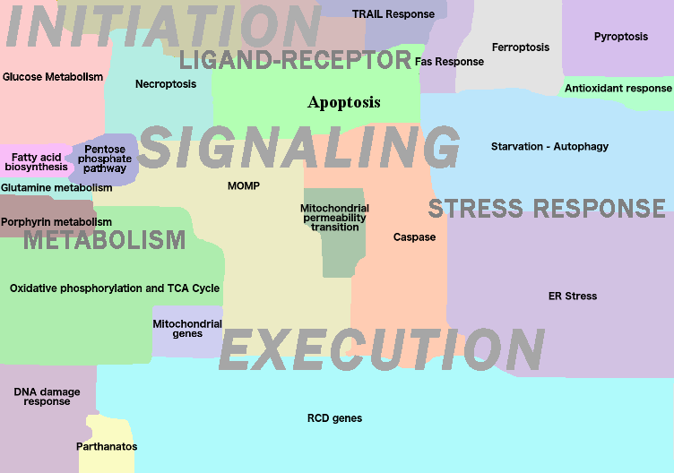

Institut Curie Collection, Regulated Cell Death

- Regulated Cell Death Map
- Access to NaviCell
- Access to MINERVA
- Access to NDEx
The map represents mechanisms involved in all documented modes of regulated cell death (RCD). The map depicts biochemical triggers and upstream signalling as death receptors; mitochondria, glucose metabolism and DNA damage initiating different modes of programmed cell death. An addition layer of cell death signalling regulation by miRNAs is described on the map as well. The molecular mechanism executing each programmed cell death mode is represented in details. The map is composed of 26 functional modules. In total, the map contains 2657 species among them 1008 proteins, 260 genes, 93 miRNAs, 2020 reactions etc. and based on original information retrieved from 800 scientific papers.
- Layer: Initiation (reversible)
-
Stress response
- Antioxydant response
- DNA damage response
- ER stress
- Starvation-Autophagy
-
Ligand-Receptor
- Death receptor pathways
- Trail response
- Fas response
- TNF response
- Dependence receptor
- Death receptor pathways
-
Metabolism
- Cell metabolism
- Fatty acid biosynthesis
- Glucose metabolism
- Glutamine metabolism
- Pentose phosphate pathway
- Porphyrin metabolism
- Mitochondrial metabolism
- Oxidative phosphorylation and TCA cycle
- Mitochondrial genes
- Cell metabolism
-
Stress response
- Layer: Signalling (rewirable)
- Apoptosis
- Necroptosis
- Ferroptosis
- Parthanatos
- Pyroptosis
- Layer: Execution (irreversible)
- MOMP Regulation
- Mitochondrial permeability transition
- Caspases
- RCD genes